Зір
Добре помічає рух і пристосований до сутінкового освітлення. У повній темряві не бачить так само добре, як удень або при слабкому світлі.
БІОЛОГІЧНІ ВИДИ
Зграєвий хижак з іншого Плану. Природний ворог великих кішок і мисливець на людей.
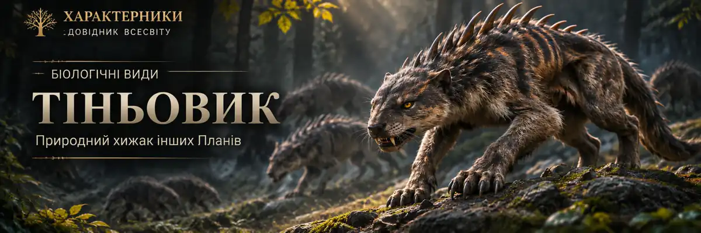
ЗАГАЛЬНИЙ ОПИС
Тіньовик — рухлива наземна хижа тварина, що сформувалася на іншому Плані. Її головна перевага — не броня чи надзвичайна сила, а швидкість, спритність, витривалість на короткій дистанції та узгоджені дії кількох особин.
На рідному Плані великих кішок тіньовики сприймають як звичайну природну здобич. Вони також полюють на людей: не вважають їх незнайомими конкурентами й не уникають людських поселень лише через присутність людей. За сприятливих умов можуть нападати на свійських і диких тварин.
Тіньовики не мають природних ворогів, окрім великих кішок. Це сприяло зростанню їхньої чисельності та перетворило вид на серйозну загрозу для інших мешканців рідного Плану.
ЗОВНІШНІСТЬ І ФІЗІОЛОГІЯ
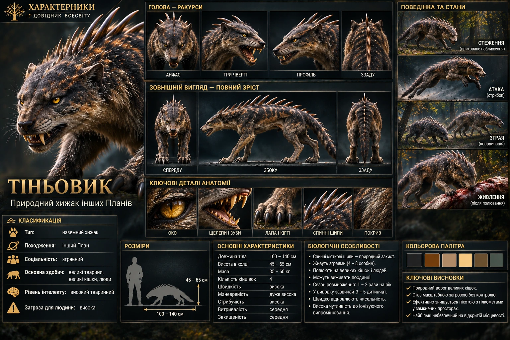
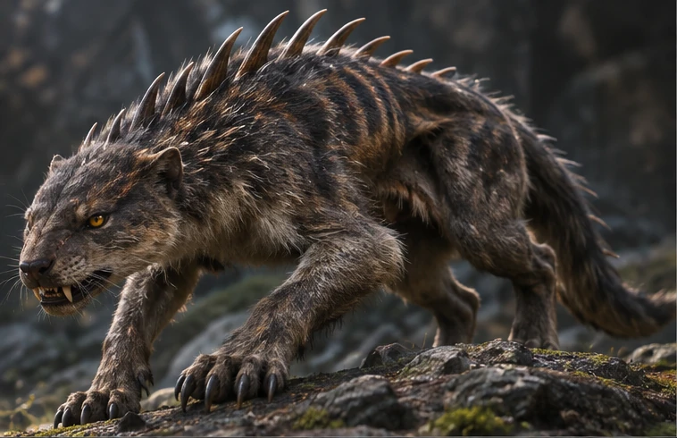
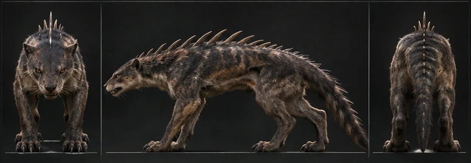
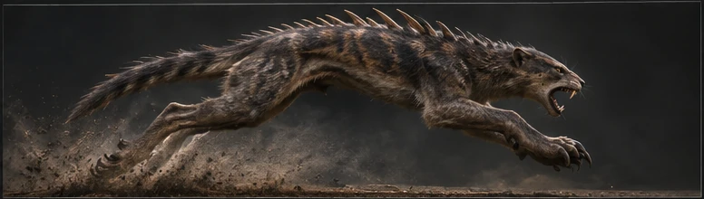
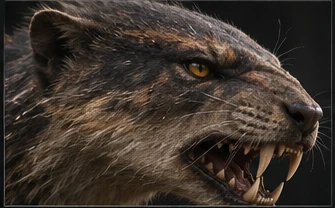
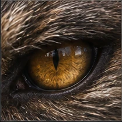
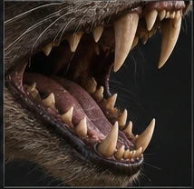
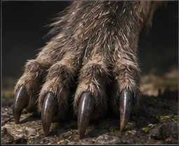
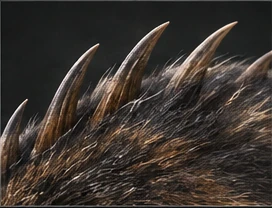
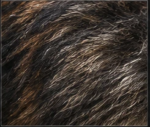
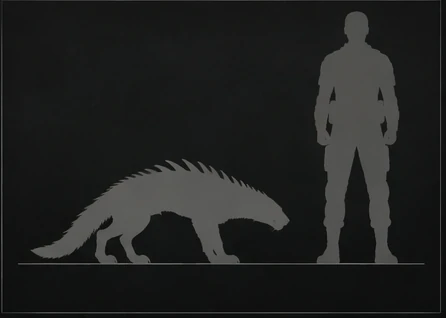
| Довжина тіла | Приблизно 100–140 см без урахування хвоста |
|---|---|
| Висота в холці | Приблизно 45–65 см |
| Маса | Орієнтовно 35–60 кг |
| Пересування | На чотирьох кінцівках; здатний швидко прискорюватися, стрибати та долати нерівну місцевість |
| Статура | Витягнуте гнучке тіло, низький центр ваги, потужні задні кінцівки та довгі передні лапи з міцними кігтями |
| Шкіра й покрив | Щільна шкіра та короткий шерстистий або волокнистий покрив, забарвлення якого допомагає зливатися з місцевістю |
| Голова | Відносно невелика, видовжена; щелепи сильні, пристосовані для утримання та розривання здобичі |
Тіло тіньовика не має важкого природного панцира. Його захист — рухливість, здатність змінювати напрямок атаки та уникати прямого зіткнення з сильнішим противником.
ОРГАНИ ЧУТТЯ
Добре помічає рух і пристосований до сутінкового освітлення. У повній темряві не бачить так само добре, як удень або при слабкому світлі.
Чутливий слух допомагає визначати напрямок руху здобичі та помічати наближення тварин або людей.
Допомагає знаходити слід, розрізняти запахи тварин і людей та повертатися до місць, де раніше було знайдено здобич.
Швидко реагує на зміну руху цілі. Найнебезпечніший на короткій дистанції, коли може раптово змінити напрямок і атакувати збоку або з тилу.
ПОВЕДІНКА І ЗГРАЯ
Зазвичай тіньовики полюють групами приблизно по чотири-вісім особин. Зграя не обов'язково має постійного ватажка: під час полювання тварини узгоджують дії за допомогою рухів тіла, звуків і запахових сигналів. Ролі можуть змінюватися залежно від місцевості та поведінки здобичі.
Зграя може переслідувати ціль, змушувати її змінювати напрямок, розділяти увагу й атакувати з кількох боків. Якщо здобич виявляється надто небезпечною, тіньовики відступають, спостерігають і можуть повторити напад за сприятливішої нагоди.
Окремі особини здатні виживати без зграї. Такі тварини частіше полюють із засідки, обирають меншу здобич і уникають відкритого протистояння з великими кішками. Самостійне життя можливе, але зграя дає значно більше шансів уполювати велику тварину.
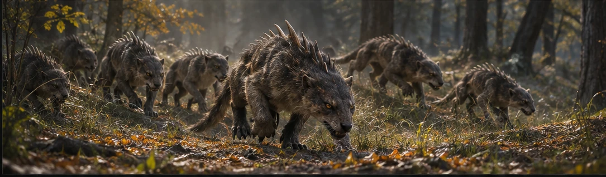
РОЗМНОЖЕННЯ І ЧИСЕЛЬНІСТЬ
Розмноження має сезонний характер. Основний період парування припадає на сприятливу частину року, коли достатньо їжі та є умови для вирощування молодняка. За робочою біологічною моделлю, одна самиця може приносити один-два виводки на рік, зазвичай по три-п'ять дитинчат.
Молоді тварини досить швидко переходять до самостійного полювання. Статевої зрілості вони досягають приблизно у віці одного-півтора року. Висока плодючість, раннє дорослішання та відсутність інших природних ворогів дозволяють популяції швидко відновлюватися після втрат.
ПОЛЮВАННЯ ТА НЕБЕЗПЕКА
На відкритій місцевості тіньовики використовують швидкість, маскування та можливість атакувати з різних напрямків. Вони не обов'язково кидаються на ціль усією зграєю одночасно: частина може відволікати увагу, поки інші намагаються зайти збоку або ззаду.
Велика кішка здатна вбити тіньовика, а в прямому зіткненні має перевагу в масі та силі. Проте одиночна кішка залишається вразливою до зграї, особливо якщо тварини атакують почергово й намагаються виснажити її або дістатися незахищених ділянок.
Людина без належного захисту також є здобиччю. Тіньовик може напасти раптово, скориставшись укриттям, поганою видимістю або неуважністю жертви. Водночас він не має надприродної стійкості до куль: влучання зі стрілецької зброї здатні тяжко поранити або вбити тварину.
Швидкість, маневреність, засідки й атаки з кількох напрямків дають тіньовикам перевагу над неорганізованими групами людей.
У вузьких коридорах і приміщеннях зграї складніше обходити захисників і використовувати маневр. Піхота з гілкометами може контролювати проходи та знищувати тварин, якщо вчасно виявить їх.
ПРИРОДНІ ВОРОГИ
Єдиними тваринами, які природно протистоять тіньовикам, є великі кішки. Саме полювання на них сформувало частину мисливської поведінки тіньовиків: вони вміють атакувати сильну, швидку здобич, шукати слабкі місця та діяти групою.
Окрема людина й окрема кішка можуть вижити під час зустрічі з тіньовиком, але це не означає, що вони гарантовано переможуть. Результат залежить від раптовості нападу, кількості хижаків, місцевості та можливості використати зброю або броню.
ПЕРЕЛОМ У ПРОТИСТОЯННІ
Перелом на рідному Плані настав тоді, коли вершники перестали сприймати велику кішку лише як верхову тварину й навчилися діяти з нею як єдине ціле.
Кішка забезпечує гострий слух і нюх, швидку реакцію, маневреність та здатність рухатися складною місцевістю. Людина додає стратегічне мислення, вибір цілі, сучасну зброю та оцінку загальної ситуації. Вершник і тварина навчаються розуміти рухи одне одного й діяти узгоджено, не втрачаючи власних природних переваг.
Сучасна броня великих кішок зменшує ризик смертельних поранень, але не робить їх невразливими й не повинна обмежувати рухливість. Вирішальною перевагою стає саме поєднання двох різних способів сприйняття та ведення бою.


ПЕРЕХІД ДО ІНШОГО ПЛАНУ
Після потрапляння на інший План тіньовики зберігають основні мисливські інстинкти. Вони продовжують полювати на людей і тварин, швидко пристосовуються до нової місцевості та можуть проникати до підземних укриттів, якщо знаходять доступні входи.
У підземних містах їхня головна перевага слабшає: обмежений простір заважає зграї маневрувати й атакувати з кількох боків. Там організована піхота з гілкометами має змогу зупиняти їх у проходах і приміщеннях.
Висока чутливість виду до іонізуючого випромінювання може стати додатковим біологічним чинником стримування. Вона не означає миттєвої загибелі від будь-якого контакту з радіацією: наслідки залежать від отриманої дози та тривалості опромінення.
← До довідника Всесвіту